5. Finalised Main Design Concept Validation and Prototyping
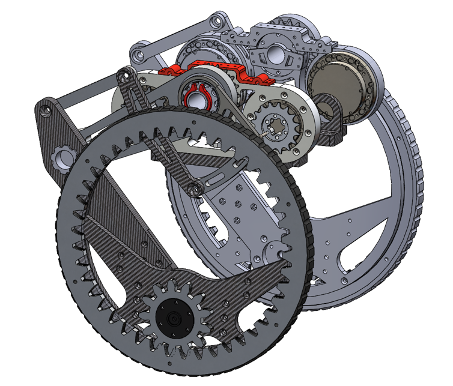
Figure X: Explanation put here.
Video X: Explanation put here.
5.1 Robot Dynamic Motion Concept
There are two ways the big wheel robot can climb up the 200mm step. Both ways are illustrated below in Figure X.
1. Putting The robot body on the platform before bringing the leg over the platform.
2. Jump up, the wheel will have a little or no contact with the platform edge before roll up the platform completely
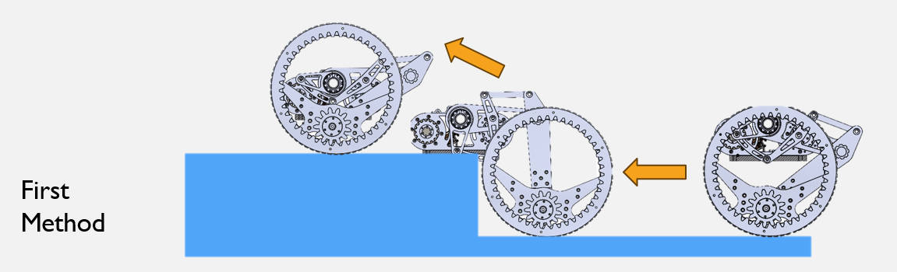
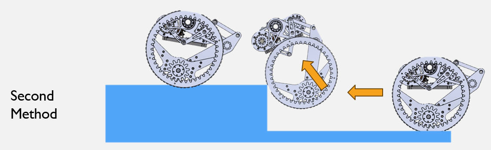
Figure X: Explanation put here.
5.2 Linkage Detailed Design
In this section, the detailed design of the linkage mechanism used in the wheel-leg configuration is presented.
The linkage is critical for enabling effective step-climbing capability while optimising torque transmission and structural integrity.
5.2.1 Design Consideration
The linkage is used to create a torque step-up based on the ratio between the
linkage arms (for example, segments CD and CE in the design). A scissor-type five-bar
configuration is adopted because it offers a much wider tuning range for this ratio compared
to conventional linkages mounted behind the wheel, which only provide limited
mechanical amplification.
By adjusting pivot positions and arm lengths, the scissor layout allows a higher and more
controllable torque multiplier specifically in the step-climbing posture. This produces a
stronger lifting moment at the wheel–step contact while keeping linkage forces within
realistic material limits. At this stage, the design mainly targets static load-carrying
capability to ensure the robot can hold its weight on a step without back-driving.
5.2.2 Design Validation
At this stage, validation focuses on the linkage’s static load capacity under the
motor’s holding torque. The objective is to confirm that, in a step-climbing
posture, the linkage can safely support the full robot weight with a comfortable
safety margin.
Figure X: Linkage geometry
Click to expand: Full linkage length calculation page
Figure X: Embedded linkage length calculation page showing
static equilibrium derivation, MATLAB parametric sweep, and torque–weight
maps for different link configurations.
From the calculation results, many configurations satisfy the 200 mm step requirement
while delivering a static lift capacity exceeding approximately 38 kg, which gives a
robust safety margin for the current 20 kg robot. These static approximations provide
a sufficiently conservative reference during the rapid prototyping phase.
For this project, a ratio of cd/ce = 115/75 ≈ 1.5 was selected for design and packaging convenience.
The linkage allows a maximum travel of 448 - 137 = 311mm, which is
sufficient for the robot to climb the 200mm step while maintaining a reasonable posture.
5.2.4 Prototyping
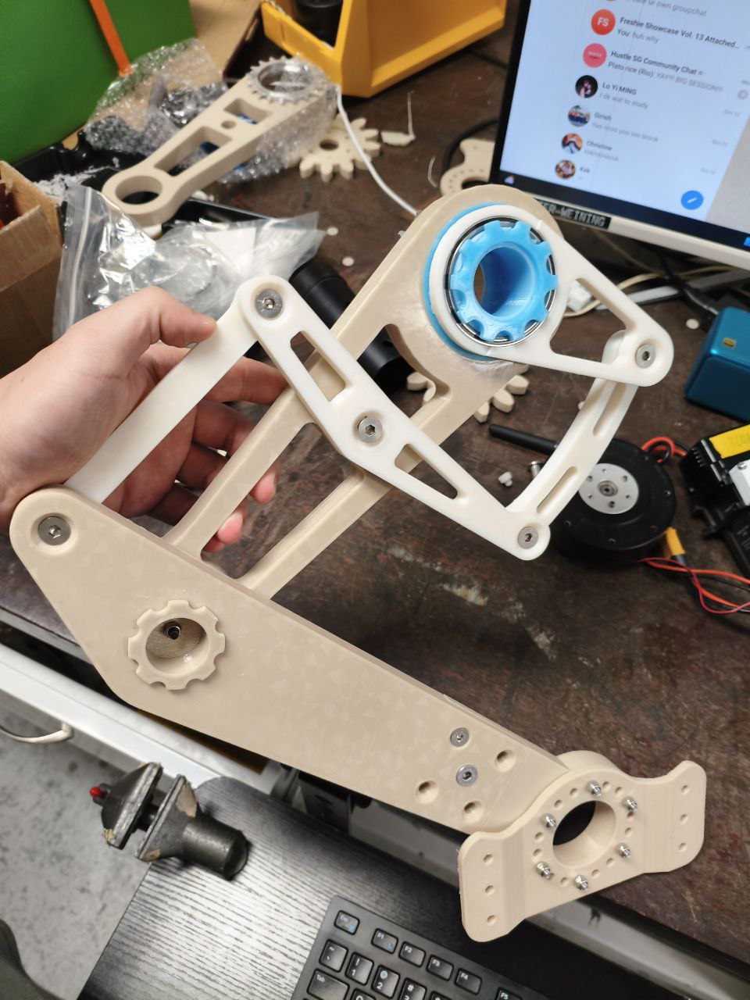
Figure X: Explanation put here.
A first prototype of the linkage was manufactured using 3D print plate and standard
fasteners to quickly verify motion and interference clearance. This
prototype focuses on:
Checking the real motion envelope against the CAD model.
Confirming there is no collision with the wheel, chassis or armour.
Varify the dynamic capability.
Allow the prototype to execute some balancing motion with the motors installed.
5.2.5 Future Improvements – Linkage
Perform full dynamic simulation to identify the most energy-efficient linkage profile for repeated step climbing.
Use FEA to determine the required plate thickness and verify stiffness and strength under worst-case loads.
Optimise joint hardware and countersink depths to eliminate unwanted looseness caused by over-long bolts.
Select suitable structural materials (e.g., aluminium vs. carbon fibre) while avoiding geometries that promote carbon fibre delamination.
Justify any weight-reduction pockets using FEA to ensure no local overstress is introduced.
Add wire-routing holes and dedicated mounting points for motor drivers and sensors to improve integration and serviceability.
5.3 Cascaded Leg Joint Design
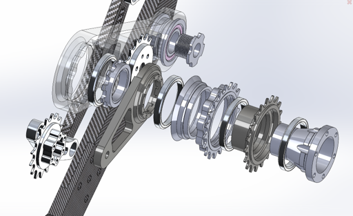
Figure X: Cascaded joint diagram showing key components and layout.
Video X: Explanation put here.
5.3.1 Design Consideration
Although many robots stack hip and knee motors using hollow-shaft actuators for compactness,
hollow-shaft units are far more expensive. The HT8101 motors used in this project cost about
$300 SGD each, whereas comparable hollow-core motors are typically several times more.
Using non-hollow motors also enables mounting one at the front and one at the rear of the
chassis, improving mass distribution and reducing the load concentration that occurs when
stacked motors sit at a single joint.
To realise this layout, a cascaded-joint architecture is adopted. This design allows two
freely rotating gears to share the same axle, each driving the large and small leg segments
independently, as demonstrated in the video.
5.3.2 Design Details
Figure X: Sectioned view of the cascaded joint assembly showing key components and tolerances.
The cascaded joint comprises:
Two drive stages using chains and sprockets to route torque to the big and small leg segments.
A central support structure that houses the 4 headset bearing and chain paths.
Carefully controlled fabrication tolerances to minimise backlash and misalignment.
Fabrication tolerance is critical: too much clearance introduces backlash and vibration,
while too little makes assembly difficult. The joint geometry is therefore designed with
explicit allowance for machining and anodising while keeping functional fits tight in
high-load regions.
Figure X: headset bearing.
The main joint bearing is a 1.8″ bicycle headset angular-contact bearing with nominal
size 47.8 × 56.8 × 6.5 mm (ACB568H6.5-type), chosen primarily for its compact
form factor and convenient integration with circular housings.
5.3.3 Design Validation
Although the exact load rating of the 47.8 × 56.8 × 6.5 mm ACB568H6.5 headset bearing
is not published by the vendor, a comparable headset bearing (Enduro ACB 4545 150,
40 × 52 × 7 mm) has a static load rating of approximately 4.34 kN.
the headset bearing is considered significantly over-specified for this application.
As a result, the bearing choice is driven almost purely by geometric constraints and
packaging rather than by ultimate load capacity.
5.3.4 Prototyping
Figure X: Explanation put here.
A metal prototype of the cascaded joint was manufactured and assembled with the
selected bearing, sprockets and chain. The prototype demonstrates:
Smooth rotational motion over the full operating range.
Acceptable backlash for the current stage of development.
No obvious binding, scraping or structural instability under manual loading.
5.3.5 Future Improvements – Cascaded Joint
The Cascaded Joint works as intended and quite smoothly with undetectable vibration and noise. No future improvements are needed.
5.4 Hubless Wheel Design
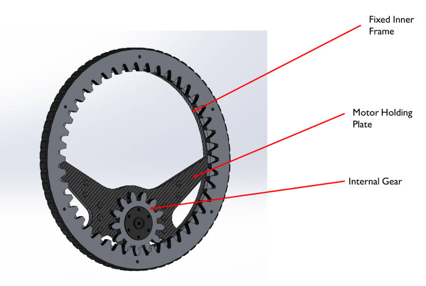
Figure X: Explanation put here.
5.4.1 Design Consideration
The hubless wheel design was chosen due to RoboMaster competition rules,
which require rigid “armour plates” to be mounted on all four sides of the robot.
These plates must remain at a fixed height and stay horizontally aligned relative to the chassis during motion.
This constraint makes it difficult to use large conventional wheels in a bipedal wheel-leg configuration,
as the armour plates would significantly obstruct the leg’s movement(Refer to Figure X (Right). A hubless wheel avoids this interference,
allowing the leg to articulate freely while still meeting the competition’s armour-mounting requirements.
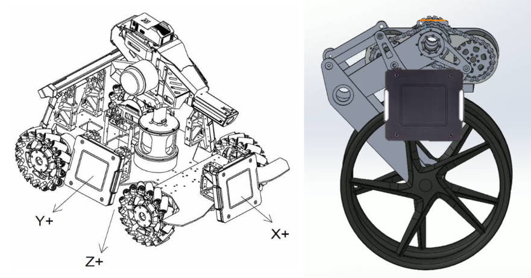
Figure X: Explanation put here.
Given the design constraints, a hubless wheel configuration was selected. Although uncommon due
to higher bearing friction, reduced structural rigidity, and the need for a fully customised
wheel–hub interface, the design offers a key advantage: it allows a significantly lower chassis
profile. This provides much greater flexibility for integrating the gimbal within competition
height limits and, importantly, enables the armour plate to be mounted rigidly at the centre of
the wheel’s non-rotating inner frame.
5.4.2 Design Details
Figure X: Explanation put here.
The current design uses a large turntable bearing as the inner raceway, with a
3D-printed gear profile attached to the wheel rim for prototyping. The inner non-rotating
frame mounts directly to the cascaded leg joint, and the outer ring acts as the driven
wheel. (Refer to Figure X)
5.4.3 Design Validation
Kinematic calculations were carried out using the selected motor (e.g. M3508) and gear
ratio to ensure that the hubless wheel can deliver sufficient tangential speed and
acceleration on flat ground and during step climbing. These checks confirm that the
prototype meets the required speed range while staying within realistic torque limits using the available motor.
Figure X: Explanation put here.
Click to expand: Hubless Wheel Acceleration calculation
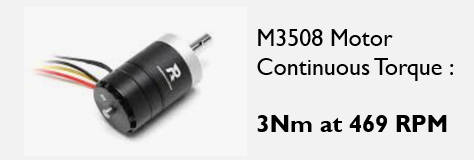
Figure X: Explanation put here.
This configuration of Standard ISO involute gear profile 13 teeth to 43 teeth gives a torque step up of 3.3 times.
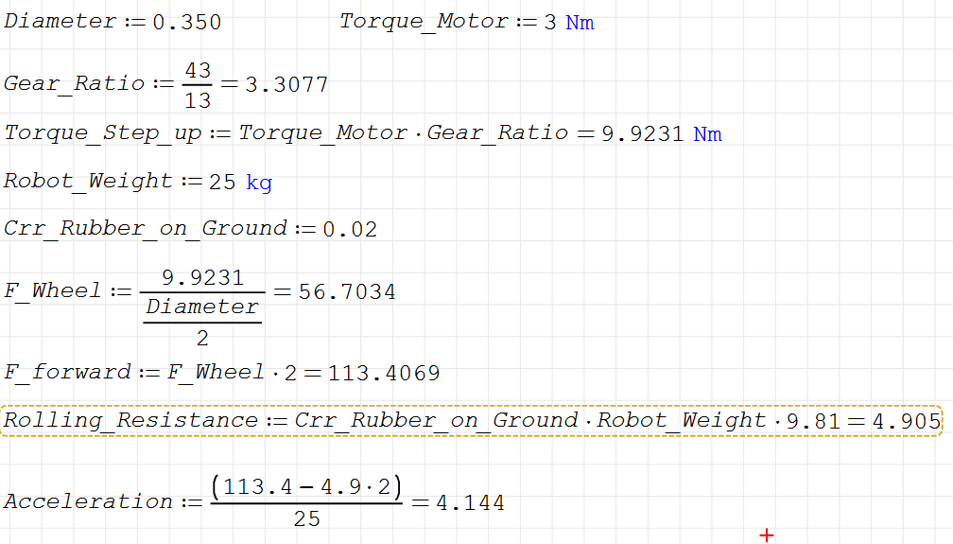
Figure X: Explanation put here.
The acceleration from the calculation ~4m/s^2 is sufficient for prototyping purpose. The gear ratio can be optimised to suit future needs.
5.4.4 Prototyping
Figure X: Explanation put here.
Due to time constraints, the hubless wheel prototype was built using a
350 mm-diameter turntable and a 3D-printed gear profile. This is not a production-grade
solution, but it is sufficient to:
Verify the feasibility of the hubless geometry.
Test smooth rotational motion under light load.
Check assembly and integration with the leg structure.
5.4.5 Future Improvements - Hubless Wheel
Replace the temporary turntable with a bearing specifically designed for radial loads.
The current turntable risks ball jamming under high radial forces.
Perform dynamic modelling of the gear train to determine the optimal gear ratio with
respect to the motor torque and desired speed.
Simplify and stiffen the mounting structure between the inner frame and the leg;
several intermediate pieces are currently used only to “fit” the wheel-leg assembly and
can be eliminated.
Increase overall structural rigidity to reduce flex, which would otherwise degrade
control performance.
5.5 Chain Drive Mechanism
5.5.1 Design Consideration
The chain drive is used to offset the drive motor to the side of the leg while still
transmitting torque to the hubless wheel and cascaded joints. This improves packaging
flexibility and keeps the motor away from direct impact zones.
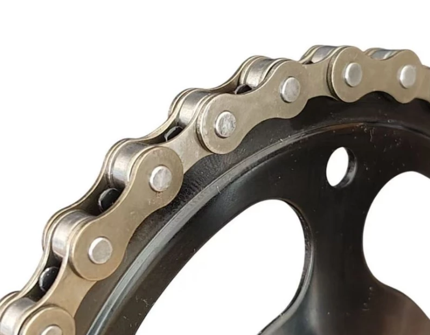
Figure X: 8 Speed Bicycle Chain
A lightweight bicycle-type chain is selected rather than a standard industrial roller chain,
as bicycle chain are much thinner and light weight.
5.5.2 Design Details
The chain drive consists of:
Primary drive sprocket on the motor output shaft.
Driven sprocket on the hubless wheel / intermediate shaft.
A small roller acting as a chain tensioner.
Figure X: Chain Tensioner
Currently, a small bicycle roller is installed to tension the chain. However, its position is
fixed, so the tension cannot be adjusted once assembled.
Figure X: FILL IN
The gear is designed to follow the standard ISO Involute profile: ISO Z16 08A.
5.5.3 Design Validation
The mechanical strength of the selected chain is a typical bicycle chain which can withstand up to 200kg, it significantly exceeds the torque produced
by the drive motor, even under conservative shock-load assumptions.
The mechanical advantage of the chain sprocket is not considered yet as the current prototype is only used to verify the chain routing and tensioning concept.
Optimisation will be considered in the future after the mechanical parametres are more finalised.
5.5.4 Prototyping
A prototype chain drive was assembled on the leg module and tested for:
Chain tracking and alignment across the full range of motion.
Noise and vibration under moderate load.
Ease of assembly and chain installation.
It is shown in the video that the chain is very loose and need to be tensioned properly.
5.5.5 Future Work - Chain Drive
Implement a screw-adjustable tensioning mechanism so that chain tension can be
tuned precisely during assembly and maintenance. The mounting brackets for both the
tensioner and the sprockets should be stiffened and simplified to minimise play, which
will improve drivetrain efficiency and reduce backlash.
5.6 Electrical
Owing to project budget limitations, motors supplied by the NUS Calibur team are used
in this design. Prior calculations have already verified that these motors meet the
performance requirements for the intended application.
Click to expand: Motors Used
Figure X: HT8108-J6 Joint Motor
Nominal Torque = 6Nm
Torque After Reduction = 36Nm (with 1:6 reduction)
Max Speed After Reduction = 440 RPM
Nominal Current = 15A
Voltage Range = 24V - 36V
Power = 170W
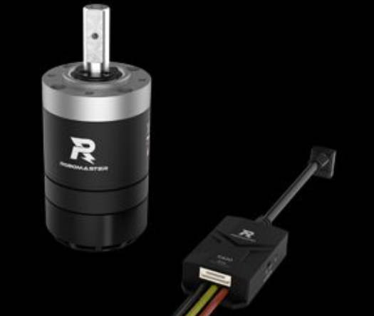
Figure X: M3508-P9 Wheel Motor
Torque After Reduction = 3Nm (with 1:6 reduction)
Max Speed After Reduction = 469 RPM
Nominal Current = 15A
Voltage Range = 24V
5.7 Firmware Code
Firmware development will be the primary focus moving forward. At the current stage, it is
implemented mainly to test integration with the mechanical and electrical systems and to
establish a foundation for future development.
Click to expand: Firmware Code implmented to test the prototype
Below are example code snippets for the balancing control loop implemented in the robot's firmware. It is used to test
the responsiveness of the Hubless Wheel to the IMU data to try to keep the robot balance with PID first.
Below is the CAN Communication protocol function for the HT8108 Motors used for the joint of the robot.
It will output a toruqe to the motor, which is what will be needed for LQR Controller in the subsequent development.
As implementing both the big-wheel and hubless wheel designs increases the overall robot mass,
weight optimisation becomes critical to ensure compliance with competition rule limits.
A detailed evaluation and a structured optimisation approach are therefore required moving forward
to keep the design both lightweight and mechanically robust.
Click to expand: Weight Optimisation Evaluation
Weight optimisation is a critical part of robot design, particularly for mobile systems where
performance is strongly affected by inertia, power consumption, and structural loading. The
objective is not simply to minimise weight, but to achieve an optimal balance between mass,
stiffness, durability, and functional performance.
General Approach to Mechanical Weight Optimisation
The standard engineering workflow typically involves the following steps:
1. Define weight targets
Establish a practical mass budget based on competition rules, motor capabilities, and
performance requirements (acceleration, step-climbing torque, maneuverability).
2. Identify weight-critical subsystems
Components such as the chassis frame, wheel-leg assembly, linkages, and gimbal
are usually the largest contributors to mass. These areas are prioritised for optimisation.
3. Apply structural optimisation techniques
Common methods include:
Topology optimisation: remove low-stress regions identified through FEA.
Material substitution: replace aluminium/steel with composites or high-strength polymers.
Geometry refinement: convert solid components into ribs, shells, or trusses.
Load-path design: ensure mass is concentrated along principal stress lines.
4. Validate using Finite Element Analysis (FEA)
Simulate bending, torsion, impact, and cyclic loading to ensure the optimised part still
meets strength and safety-factor requirements.
5. Perform iterative refinement
Adjust dimensions, cutouts, wall thickness, or reinforcement ribs based on FEA results
until the component reaches an acceptable balance of mass and stiffness.
Threshold for Optimisation
Mass exceeds the target weight budget for the subsystem, or
The component contributes significantly to inertia and reduces dynamic performance, or
The weight compromises functionality such as step-climbing, acceleration, or gimbal behavior.
Application to This Project
For this robot, weight optimisation will focus on:
Reducing mass in the wheel-leg assembly without compromising step-climbing stiffness
Optimising the linkage thickness and geometry through FEA-driven cutouts
Evaluating the hubless wheel frame for ribbed-shell or lattice structures
Minimising chassis overdesign while maintaining rigidity for gimbal aiming
Rebalancing weight distribution to maintain stability during stepping and landing
Moving forward, each mechanical subsystem will undergo a structured optimisation cycle
involving material review, topology optimisation, and simulation verification. This ensures
the robot meets performance requirements while staying within the mass limitations imposed
by the competition and the available motor capabilities.


.jpg)
.jpg)